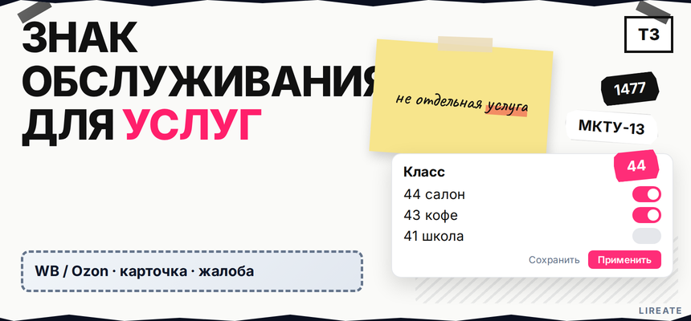
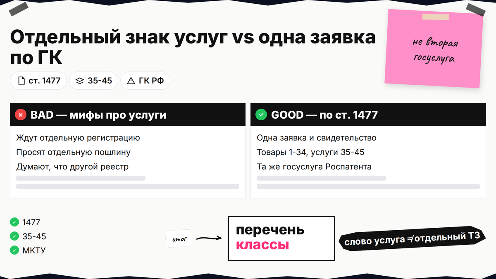
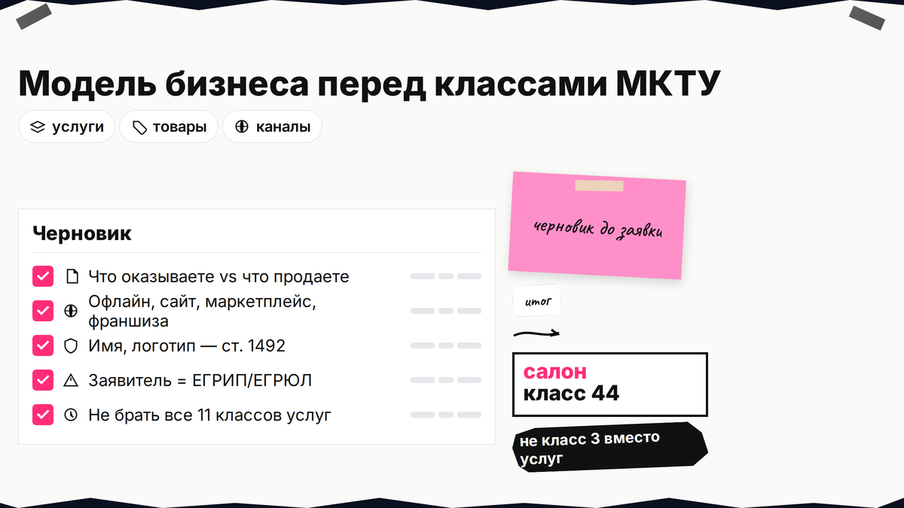
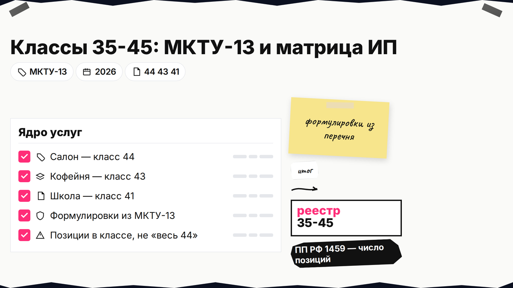

Салон, кофейня или онлайн-школа - и в поиске запрос знак обслуживания регистрация: будто для услуг другая процедура и отдельное свидетельство. В России один институт товарного знака; разница - в классах МКТУ (45 групп товаров и услуг в перечне заявки). Вы сравните товарный знак для услуг с "товарным" вариантом по ГК РФ, наметите классы 35-45, проверите реестр и учтете новую форму заявки с 18.08.2026.

TL;DR / Быстрый инсайт: По п. 1-2 ст. 1477 ГК РФ товарный знак индивидуализирует товары, знак обслуживания - работы и услуги; к нему применяются те же правила. Отдельной госуслуги "только для услуг" нет: одна заявка, одно свидетельство на товарный знак (знак обслуживания). В перечне указывают классы: 1-34 - товары, 35-45 - услуги. С 2026 года в заявках действует МКТУ-13; с 18.08.2026 - новая форма (приказ Минэкономразвития № 386). Пошлины зависят от числа классов и позиций в перечне (таблица Роспатента), а не от слов "товар" или "услуга".
Материал для ИП, самозанятых и ООО с сервисной моделью на Лирейт. Нормы, формы и ориентиры пошлин сверены на 10.11.2026; это не индивидуальная юридическая консультация. Систему маркировки "Честный ЗНАК" здесь не разбираем - это про коды на товарах, а не про регистрацию имени в Роспатенте.

Знак обслуживания - не "вторая лицензия", а юридический термин для охраны услуг и работ. Экспертиза, срок 10 лет с даты заявки (ст. 1491) и риск отказа при сходстве с чужим знаком в однородных позициях (п. 6 ст. 1483) - общие для любой заявки.
| Критерий | Товарный знак (акцент на товары) | Знак обслуживания (акцент на услуги) |
|---|---|---|
| Объект охраны | Товары (п. 1 ст. 1477) | Работы, услуги (п. 2 ст. 1477) |
| Классы МКТУ | 1-34 | 35-45 |
| Процедура в Роспатенте | Одна (госуслуга) | Та же |
| Итоговый документ | Свидетельство на ТЗ (знак обслуживания) | То же бланк |
| Пошлины | По классам и позициям перечня | Без отдельной ставки "за услуги" |
Делайте: говорить с поверенным и в заявке языком классов МКТУ, а не "оформите мне знак обслуживания". Не делайте: ждать отдельный реестр или отдельную пошлину только потому, что у вас нет склада товаров.

Типичная ошибка: предприниматель с чистым сервисом запрашивает регистрацию только в классе 3 (косметика), потому что "в зале продают шампуни", хотя продает чужие бренды, а охранить нужно стрижку и уход. Или наоборот: мастер выпускает свою линейку кремов, но в заявке нет товарных классов.
Делайте: черновик "услуги / товары / планы". Не делайте: брать все 11 услуговых классов "на всякий случай" - лишние классы удорожают пошлины и не расширят реальную защиту.

Классы 35-45 покрывают рекламу, финансы, строительство, транспорт, образование, IT, юруслуги, медицину, общепит и гостиницы. Полный перечень формулировок с 01.01.2026 берут из редакции МКТУ-13 в открытом классификаторе Роспатента.
Схема подготовки перечня: факт услуги → номер класса (35-45) → точные формулировки из МКТУ-13 → корреспондирующие классы → проверка в реестре
Детальный поиск формулировок и корреспонденции классов - в гайде по определению класса МКТУ: в L44 даем услуговую "матрицу", а не повторяем весь алгоритм.
Делайте: копировать официальные названия услуг из перечня, а не свободный текст "оказываем услуги красоты". Не делайте: писать "весь класс 44" без позиций - с 04.10.2025 (ПП РФ № 1459) пошлина за экспертизу зависит и от числа позиций в классе.
Ниже ориентиры для черновика. Перед подачей сверьте формулировки с МКТУ-13 и своим договором/офертой.
| Тип бизнеса | Базовые классы | Когда добавить |
|---|---|---|
| Салон красоты, SPA, косметология | 44 | 35 - реклама, продвижение, онлайн-запись; 3 - своя косметика |
| Кофейня, ресторан, кейтеринг | 43 | 35 при активном брендинге; 30 - если продаете фирменную выпечку как товар |
| Онлайн-школа, курсы, тренинги | 41 | 35 - продвижение; 42 - если продаете доступ к своей платформе как SaaS |
| Разработка ПО, дизайн, консалтинг в IT | 42 | 35 - маркетинг услуг; товарные классы - если продаете коробочный продукт |
Итоговый вердикт: Если вы только оказываете услуги, ядро заявки - классы 35-45. Товарные классы 1-34 добавляйте, когда реально производите или продаете свой продукт под тем же брендом (пример смешанной заявки - в материалах про бренд одежды, без разбора ассортимента здесь).
Делайте: совместить имя на вывеске с перечнем в заявке. Не делайте: регистрировать описательное "Салон красоты" без различительных элементов - высокий риск отказа по ст. 1483.
Бесплатный поиск - Поисковая платформа Роспатента (круглосуточно). Ищите не только свой класс, но и смежные: конфликт по п. 6 ст. 1483 возможен при однородных услугах.
Делайте: поиск до оплаты пошлин. Не делайте: полагаться только на "свободный" домен или название группы в соцсетях.
В заявке указывают заявление, изображение знака, перечень товаров и услуг по классам МКТУ и описание (ст. 1492). С 18.08.2026 действует обновленная форма заявки (приказ № 386); заявки после этой даты оформляют по новому бланку.
Полный цикл "от черновика до свидетельства" без дублирования - в руководстве по самостоятельной регистрации товарного знака. Делайте: хранить квитанции и переписку с экспертизой. Не делайте: копировать чужие коммерческие "пакеты" по 35 000 ₽ без привязки к актуальной таблице и дате.
Подбор классов, поиск конфликтов и сопровождение заявки для сервисного бизнеса - на странице регистрации товарного знака в Лирейт. Рубрика "Товарный знак": список материалов.
Материал проверен: эксперт Елена Ковалева (главный эксперт по SEO/GEO), редакция Лирейт.
Достоверность данных: ст. 1477, ст. 1492, приказ № 386 и таблица пошлин сверены с официальными источниками на 10.11.2026; Яндекс Вордстат в среде подготовки не запрашивался.
Нет. Вы подаете заявку на товарный знак и указываете в перечне услуги в классах 35-45. В свидетельстве будет формулировка "товарный знак (знак обслуживания)".
Классы 35-45. Классы 1-34 в основном про товары. Одна заявка может совмещать и те и другие, если бизнес смешанный.
Да. Это обычная практика для кофейни с зерном под брендом или салона со своей косметикой. Главное - не забыть нужные классы с обеих сторон диапазона МКТУ.
Укажите заявителя (ИП), изображение знака и перечень конкретных услуг по классам 35-45 из МКТУ-13, без товарных классов, если товары под брендом не продаете.
Ориентир: салон - 44 (+ часто 35); кофейня - 43; онлайн-обучение - 41. Точные формулировки подтяните в классификаторе и в гайде по МКТУ.
С 18.08.2026 применяют форму по приказу № 386. Проверьте актуальный бланк на дату вашей подачи.
Нет отдельной ставки. Пошлины считают по таблице Роспатента от числа классов и позиций в перечне, независимо от того, указаны товары или услуги.